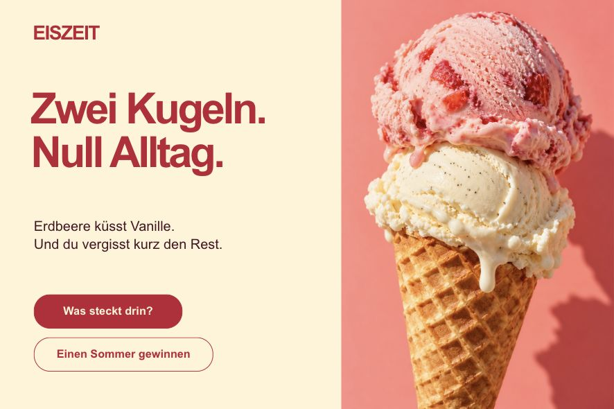

Built in Hype.
Ready to run again.
Automations for Tumult Hype 4.
Create scenes, add content, animate and export through scripts or an agent. The result stays editable in Hype.
Get ConnectorA script when you know the steps.
An agent when you want help.
Connector runs locally alongside Hype. CLI, MCP and AppleScript use the same operations. No AI service is needed to run a script.
Read the scripting guideList your open Hype documents.
'/Applications/Connector.app/Contents/MacOS/ConnectorApp' \
--run-operation '{"op":"document.list"}'Connect an MCP client to the local app.
{
"mcpServers": {
"hype-connector": {
"command": "/Applications/Connector.app/Contents/MacOS/ConnectorApp",
"args": ["--mcp-stdio"]
}
}
}Find Hype sessions from Script Editor.
tell application "Connector"
set responseJSON to perform operation "{\"op\":\"host.list\"}"
end tellTeach your agent
how Hype works.
The Connector skill gives Codex and Claude Code the instructions, recipes and Python helpers to work with the editor.
Download the skillConnection and permissions. Document creation. Scenes, images, typography, actions and animations. Saving, exporting and checking the result.
Recipes distinguish supported operations from native authoring calls and explain the editor context they require. They also cover known limitations and how to handle an uncertain result.
Install the complete folder alongside your existing agent tools. Connector and its Hype plugin are installed separately.
Make it repeatable.
Start with a connection, discover the document, make your changes and verify the saved result.
Short Python examples are included for learning individual operations.
Download the scripting examples
Made with Connector.
EISZEIT.
A three-scene Hype document, built through Connector. An ice cream campaign with an ingredients page, different scene transitions and an interactive flavour choice.
Text, images and controls remain separate editable elements. The giveaway is a local demonstration without data collection.
Connector
Automations for Tumult Hype 4.
Version 0.1.4 · Developer ID signed and notarized.
macOS 14 or later.
Tumult Hype 4.1.22.
Universal app for Apple Silicon and Intel.
Verified on Apple Silicon and under Rosetta. Physical Intel Macs and other Hype versions have not been qualified.
Signed automatic updates are enabled. If you have 0.1.3, install this version once to join the update channel.